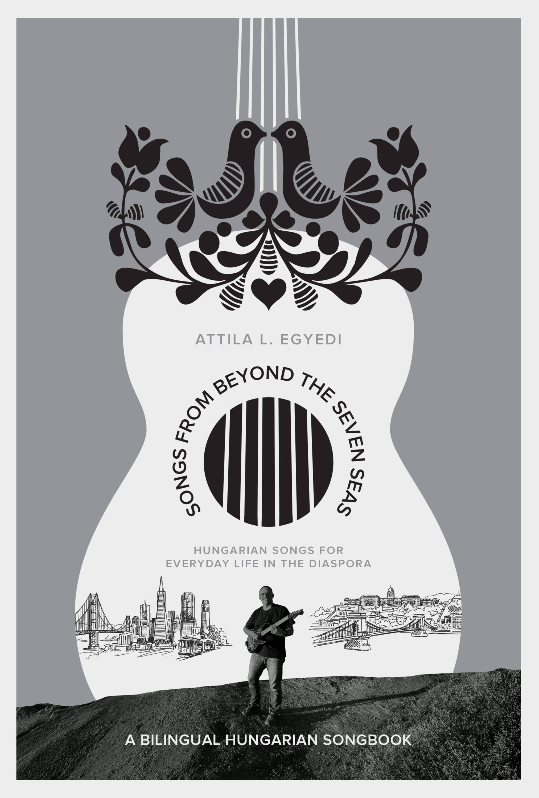

Songs from Beyond the Seven Seas
A bilingual Hungarian songbook with a ukulele bootcamp – for everyday life in the diaspora.
63 songs with chord accompaniment, every measure marked. Children's songs, folk songs, holiday songs – from Kalotaszeg to California.
Endorsements
Hungarian music transcends boundaries—national, cultural, political, instrumental, and even linguistic.
— Kalman Magyar
This much-needed music textbook opens the door, with brilliant simplicity, to the world of ukulele playing and Hungarian songs.
— Etelka Keszei